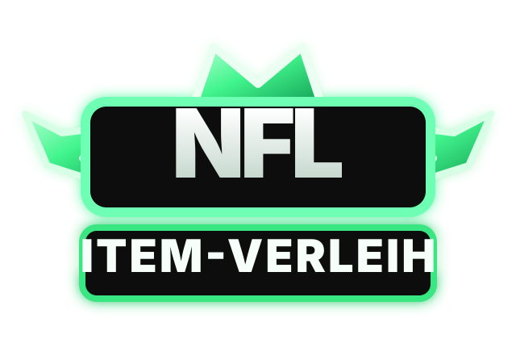

MITGLIED
4.000.000 $/ Monat
- 4 Items gleichzeitig
- 90 Minuten Leihzeit
- 20 Minuten Cooldown
- Ideal für den Einstieg

NFLITEM-VERLEIHLeihe dir die besten Items auf dem OPSUCHT Minecraft Server. Mitgliedschaften, exklusive Sets, klare Leihzeiten, schnelle Rückgabe und direkter Discord-Support – alles an einem Ort.

Jede Stufe bietet dir Zugriff auf exklusive Items, Sets und mehr. Je höher dein Rang, desto größer deine Möglichkeiten.
Alles ist darauf ausgelegt, dass Ausleihe, Rückgabe und Support so einfach wie möglich bleiben.
Login und Rollenprüfung verbinden dein Verleih-Profil direkt mit deinem Discord-Account.
Behalte verfügbare Items, Bestände und den aktuellen Verleihstatus immer im Blick.
Vordefinierte Sets lassen sich schnell auswählen und bequem gesammelt vorbereiten.
Leihzeit und Cooldown werden klar an deine aktive Mitgliedschaft gekoppelt.
Rückgaben werden nachvollziehbar erfasst, damit Bestand und nächste Ausleihe sauber bleiben.
Bei Fragen hilft dir das NFL-Team direkt über Discord weiter – schnell und unkompliziert.
Entdecke eine große Auswahl an Items, Sets und Spezial-Angeboten für deinen Verleih.
Starke Ausrüstung für jede Situation auf dem Server.
Mächtige Schwerter und Waffen für Kampf und PvP.
Effizient farmen mit den besten Tools.
Spawner, Farmer und weitere nützliche Helfer.
Besondere und limitierte Items für besondere Spieler.
Alles, was du brauchst, direkt in einer fertigen Auswahl.
Die native NFL-Verleih-App für Windows 10/11 bekommt hier später ihren offiziellen Download. Bis zur ersten freigegebenen Version bleibt der Download bewusst deaktiviert.
Der Installer wird veröffentlicht, sobald eine echte geprüfte .exe bereitsteht.
Du brauchst Hilfe, möchtest dem Server beitreten oder hast Fragen zu Mitgliedschaft und Verleih? Der NFL Discord ist die zentrale Anlaufstelle für Support, News und Updates.